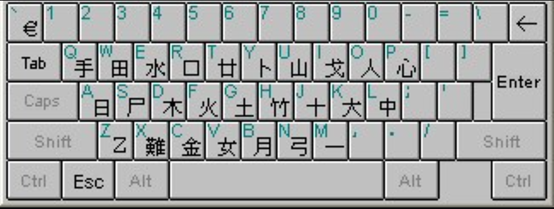

Quick Input Method
Background
The Quick Input Method (速成輸入法), also known as the "Simplified Cangjie" or "Sucheng," it was developed as a simplified version of the Cangjie Input Method and designed to be easier to learn and use , especially for those who are not familiar with the intricate structure of Chinese characters.

Features
Quick Input Method simplifies the process of typing Chinese characters by using only the first and last Cangjie basic keystrokes of a character.
It relies on the user's familiarity with character pronunciation and may offer multiple character options, based on the inputted code, which the user can then choose from.
Like Cangjie, it supports both Traditional and Simplified Chinese characters but is more commonly used for Traditional Chinese characters.
Usage method
It retains the shape-based input concept but requires fewer keystrokes for faster input. In Quick input method, characters are divided into three types: single-element, dual-element, and multi-element.
For single-element characters (e.g., "木"), type the corresponding key directly (here, "D"). For dual-element characters (e.g., "明"), type the first and last radicals (here, "AB"). For multi-element characters, type the first and last radicals (e.g., "靜" would be "QD"in quick input method but "QBBSD"in Cangjie input method).
For examples: Let's type "都愛學習" using both Cangjie and Quick input methods:
|
Cangjie |
Quick |
| 都 |
JANL |
JL |
| 愛 |
BBKE |
BE |
| 學 |
HBND |
HD |
| 習 |
SYHA |
SA |
To type a character, break it down into its radicals and type the corresponding keys. For instance, to input "明" (meaning bright), you would type "AB" since it consists of the radicals 日 (A) and 月 (B).
This is a website about Quick input method, where you can search the text to get the Quick Input code of the word
Link
Pros and cons
Advantages
- High accuracy: Due to the unique code assigned to each character, the Cangjie Input Method offers high accuracy and reduces the likelihood of mistyping.
- Speed: Once users become proficient, they can type quickly and efficiently.
- Learning tool: Learning the Cangjie Input Method can help users better understand the structure and composition of Chinese characters.
Disadvantages
- Steep learning curve: The Cangjie Input Method requires users to learn and memorize a significant number of codes, making it challenging for beginners.
- Limited use: Although it supports both Traditional and Simplified Chinese characters, the Cangjie Input Method's primary user base is in regions that use Traditional Chinese characters, such as Taiwan and Hong Kong.